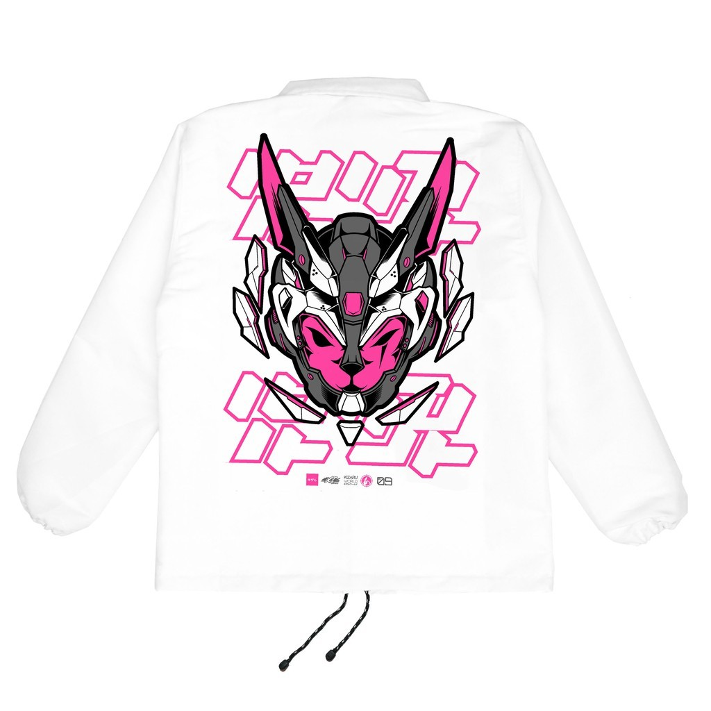

Coach Jacket MECHANIC

Product Information :
[MECHANIC]Hidup dan segala dinamikanya adalah hutan rimbun imajinasi,laut bagi buih-buih kreatifitas,tak mengenal batas. Kizaru World hadir merepresentasikan sudut lain kehidupan,disuguhkan secara apik hanya dengan kualitas terbaik. Karena setiap karya adalah cerita.
[MATERIALS]
Material: Taslan
Sablon: Plastisol
Puring : Jaring
Warna: Putih
Packaging: Zip Plastic Bag. Semua gambar adalah hasil proses foto langsung oleh tim,100% Real Pictures,bukan gambar mock-up atau desain mentah Photoshop/Coreldraw,sehingga tidak perlu khawatir apabila produk yang diterima tidak sesuai dengan gambar.